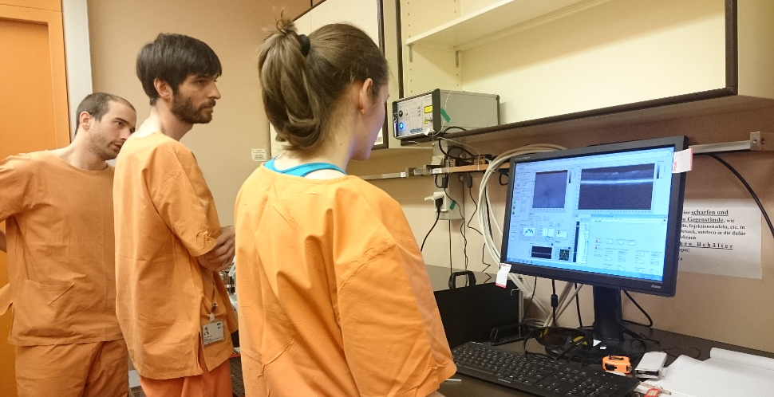
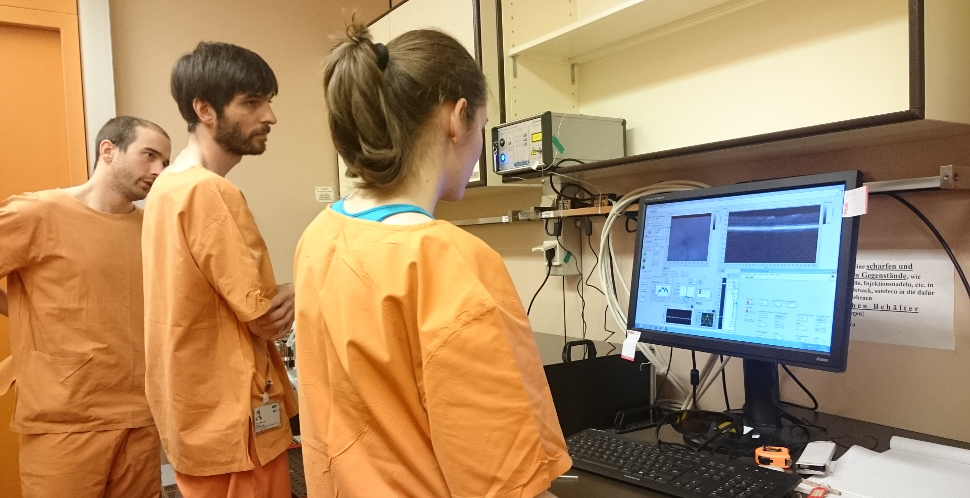

Develop multi-functional imaging techniques based in OCT for the preclinical diagnostic of Alzheimer's disease.

 


Develop multi-functional imaging techniques based in OCT for the preclinical diagnostic of Alzheimer's disease.
Meet the members of this project and know more about our careers and interests.
Take a look at the Center for Medical Physics and Biomedical Engineering where our group works.
Our colleague and lab member Stanislava Fialová successfully defended her doctoral thesis after years of hard work. On her thesis, she worked on a high resolution polarization sensitive optical coherence tomography system for ocular imaging in rodents and performed different studies.
We wish you good luck in your new job and all the best.

If you are interested in getting an overview of how one of the techniques we are using actually works and what else it can be used for, have a look at our recently published review article in Applied Sciences. The article is also highlighted on the cover of the main issue:
www.mdpi.com/2076-3417/7/5/474

We attended the OSA Biophotonics Congress that took place in San Diego this year. Bernhard, Pablo and Antonia presented their work at different sessions of the conference. The program covered different topics relating to optics in the life sciences, with many leading researchers in different fields of the optics community.


Our work on advancing polarization-sensitive optical coherence microscopy imaging for brain tissue appeared online today in Scientific Reports. Neuritic plaques, which are one of the major hallmarks in Alzheimer's disease, were hereby detected in brain tissue samples based on their birefringent property.


Our recent investigation on retinal and scleral changes during acute intraocular pressure elevation in rats was published in Biomedical Optics Express last week. Changes in the posterior albino-rat eye were studied using a polarization-sensitive OCT approach allowing the identification of polarization effects such as the scleral birefringence or the retinal nerve fiber layer retardation. The article is highlighted at octnews.org as a featured article!


The group made a christmas trip to the Museum of Technology of Vienna.


After his work in our group, Carlitos succesfully defended his Master thesis in Karlsruhe Insitute of Technology in Germany. During his thesis, he implemented an optomechanical sample arm to a Visible Light PS-OCT system and created a mouse eye model for visible light. It has been a pleasure to work with him and we wish all the best for him in Mexico.

Danielle is one of ten early career researcher (ECR) who were awarded the PLOS ECR Travel Award ! She will present her work on "Polarisation-sensitive visible light OCT for mouse retinal imaging" at the SPIE BiOS Conference, part of the Photonics West, in San Francisco. Congratulations!

Our recent work on the longitudinal investigation of retinal changes in a mouse model of age-related macular degeneration (AMD) / retinal angiomatous proliferation (RAP) was published in PLOS ONE last week. Retinal changes were studied using a multi-functional OCT approach with a threefold contrast: reflectivity, polarization sensitivity (PS) and OCT angiography (OCTA).

Antonia, Pablo and Carlos just returned from the biophotonics and imaging summer school (BIGSS’16), which took place from 5th-9th September in Galway, Ireland. Leading professors in various research fields, such as microscopy, optical coherence tomography or photoacoustic imaging, gave interesting talks about their subject. The program also included a poster session and hands-on training at NUI Galway. We had a really great and intense time there, and we are especially happy that we were able to get to know a lot of new and interesting people in the field of biophotonics!


Today our group joined the groups of Christoph Hitzenberger and Michael Pircher in a trip to the Josephinum in Vienna. Amongst numerous other collections, the Josephinum houses a world-renowned collection of nearly 1,200 anatomical wax models. It is currently displaying a special exhibition entitled “de oculis” which contains impressive, historically-important collections of ophthalmological objects and as well a small insight into new developments including, of course, optical coherence tomography.


Johannes successfully defended his thesis today. During his thesis, he investigated the melanin pigmentation of rat eyes. We wish him all the best for his career as a medical doctor in the mountains of Vorarlberg!

This year's "Betriebsausflug" (the annual summer trip for all employees of the Center for Medical Physics and Biomedical Engineering) began with visiting the interesting castle Forchtenstein. Then, at the Stoob Station in the Mittelburgenland we prepared ourselves with lunch for the sporty afternoon. Our team explored by bicycle handcars the scenic landscape of the Mittelburgenland. In the end the hard work was rewarded with a visit to a local wine cellar for a wine tasting.

The Young Scientist Association of the Medical University of Vienna hosted the 12th YSA PhD symposium last week. Marco was awarded the best oral presentation in the Medical Physics session for his presentation entitled "Long-term investigation of retinal changes in a VLDLR mouse model using multi-functional OCT", and Danielle received a prize for her photograph collage entitled "The Table" in the "Capture a Moment" category of the ScienceArt contest.


Marco and Bernhard just returned from their conference trips to the OSA conference on Biomedical Optics in Fort Lauterdale, FL, US and the ARVO Annual Meeting in Seattle, WA, US. Apart from multiple cutting-edge talks within the field of biomedical optics and ophthalmology we could also join special sessions on the 25th anniversery of Optical Coherence Tomography - Happy Birthday!


.jpg)


This month we welcome two new students to our group. The first is Carlos Reyes, who will study optics for imaging a mouse eye for his Masters thesis in collaboration with Karlsruhe Institute of Technology.
We also welcome Masters student Konrad Leskovar, who will complete a project focusing on hardware programming for more practical image acquisition. Welcome to the team!
We just returned from the 2016's Photonics West held in San Francisco Moscone Center, CA, US. Our contributions to the BIOS Conferences on Ophthalmic Technologies, Optical Coherence Tomography and Coherence Domain Optical Methods in Biomedicine as well as on Neural Imaging and Sensing were successfully presented. We had a great and intense time and are looking forward to next year!


Today the annual Christmas party of the Center for Medical Physics and Biomedical Engineering took place in the Klosterneuburg Monastery. The evening started with chestnut and hot wine infront of the Monastery, followed by an impressive pipe organ concert. After that a large and delicious buffet was offered for dinner. The evening was finish off with some drinks and nice conversations. In this sense, we want to wish everybody a merry Christmas and a happy new year.


Today we welcome two new PhD students to our lab! Pablo Eugui has just completed his Masters degree in Biomedical Engineering at the Universidad Publica de Navarra, Spain, and Antonia Lichtenegger has completed her Masters studies in Technical Mathematics and Biomedical Engineering at the Technical University of Vienna. Both will be developing their own new OCT systems. We look forward to working with them!
This project has received funding from the European Research Council under grant no. 640396

©Copyright 2016 - OPTIMALZ PROJECT